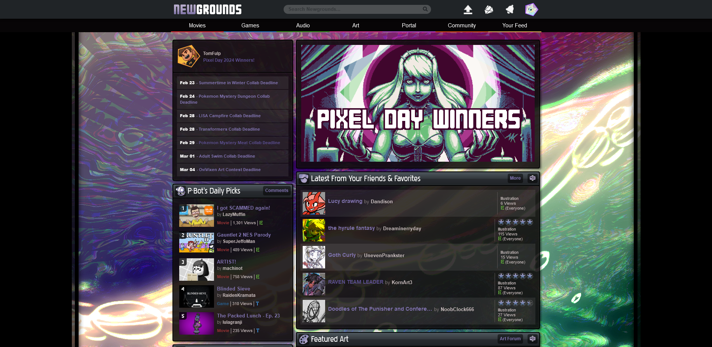
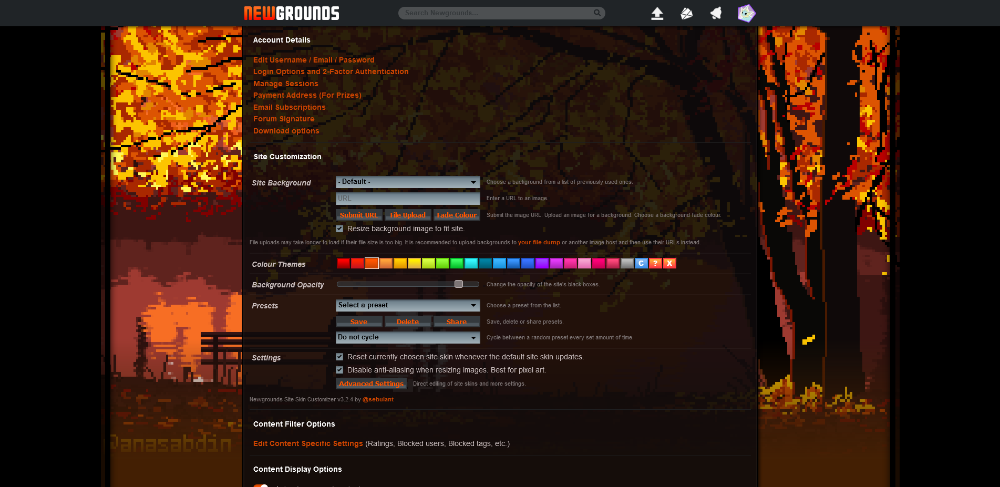
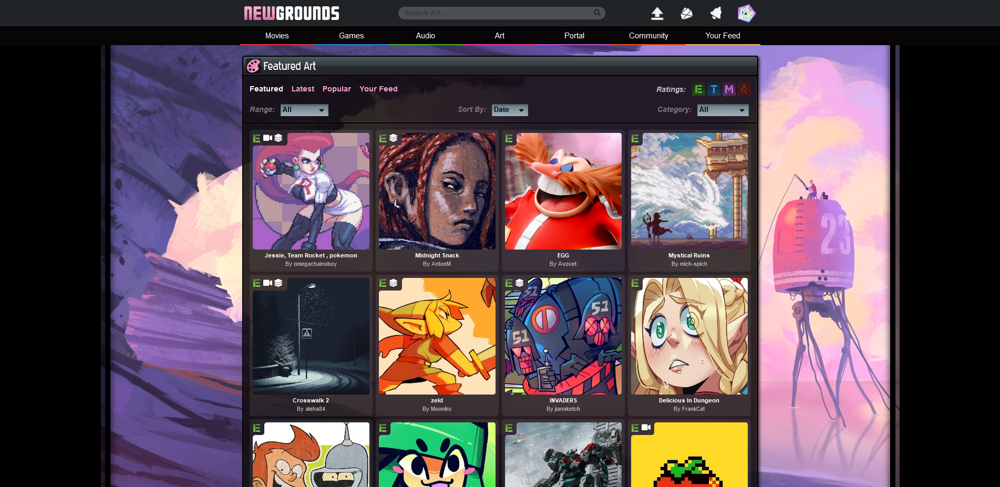
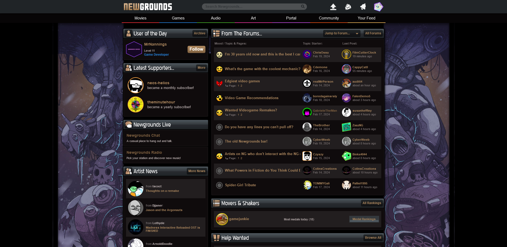
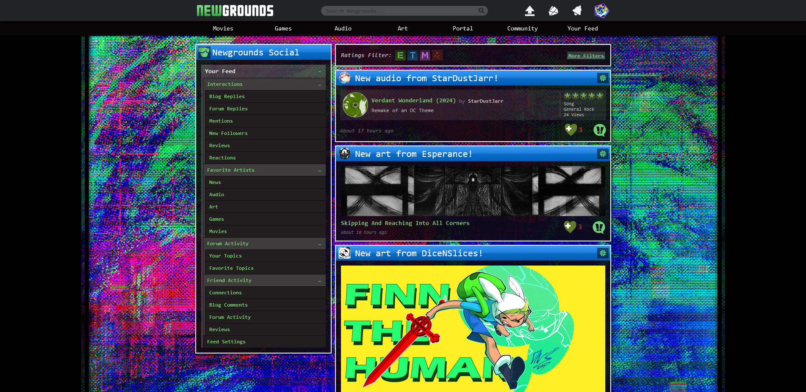

Newgrounds Site Skin Customiser
NGSS is a userscript which lets you change the look of Newgrounds to whatever you want. You can choose backgrounds from a list of previously used site skins or upload your own. You can also customise other parts of the site too.
If you have made a site skin in the past and want it included/removed from the script. Message me and I'll sort that out for you.
Main features:- Changeable background image
- Changeable text and icon colour theme
- Transparent background
- Presets that can be imported/exported
- Custom CSS
- More features that are listed further down the page
Download:
There is no public download link for this script.
Site skin changing is due to be a supporter only feature at some point in the future. As it's meant to be paid for, I have mixed feelings about making this a free download. So despite being given permission from Tom, I will not be publicly giving this away.
I will still give out download links though. If you make a site skin, put it on the art portal, and send it to me, I will give you the latest version of the script. Your skill level doesn't matter, just actually put some effort into it. If you'd like I can also include the skin you made as a built-in option for others to choose too.
Here's a template to get started.
{kind=link}
If you're not an artist, message me anyway, we can figure something out. If you have already made a site skin in the past, also message me and I will just give you a download link.
IMPORTANT NOTE: I won't be giving away download links until I have auto-updating 100% working. This is to save me the hassle of messaging everyone who has the script whenever I make an update.
Installation:
- Install the extension Tampermonkey (or any other compatible userscript extension)
- Press the download link sent to you to install the script. Tampermonkey should pop-up to prompt you to install
- Click your profile picture in the top right of Newgrounds and go to "Site Skin Settings"
Examples: 
Background art by @Metraberryy
Background art by @AnasAbdin
Background art by @GRIS9
Background art by @Shamfoo
Background art by @Esperance (excuse the god awful css im just trying to showcase what you can customise)
Full feature list:
- Changeable site background:
- Choose a background from list of old site skins (and unofficial skins if enabled in settings)
- Enter a URL to an image to use as a background
- Upload an image from your PC to upload as a background
- You can also change the fade colour at the bottom of the page
- Backgrounds that don't fit the site can be automatically rescaled
- Pixel art backgrounds can have anti-aliasing disabled
- Supports animated images too
- Changeable text and icon colours
- You can choose between the options that you would normally have when changing your profile's colour scheme
- You can also set your own custom colour too
- There is a "random" option which will change the colour every time you load a new page
- Adjustable background opacity
- Custom presets
- You can create a preset containing your current background, colour theme, opacity, fade colour and more
- Makes it easy to swap between custom site skins
- You can have your currently selected preset change over set periods of time
- Presets can be exported and imported, so you can share them with others
- Reset your currently chosen site skin whenever the sites default skin updates
- Option to write custom CSS
- Advanced settings
- Direct editing of hex values that control the sites colour theme
- Importing/exporting of all chosen settings. Useful if you use multiple browsers/devices
Changelog (not all changes are documented but it's good enough):
- v4.0 (Work in progress)
- Site skin settings given its own unique URL. It is no longer under account settings
- Added a field to add custom CSS
- Improvements to how CSS styles are loaded
- Moved the toggle for unofficial skins to main settings list
- v3.3.3 (01/05/24)
- Added FNF WeekEnd 1 skin
- v3.3.2 (15/03/24)
- Added Spring 2024 skin
- v3.3.1 (24/02/24)
- Custom preset cycling time can now be set in advanced settings
- v3.3 (21/02/24)
- Added preset cycling. Changes between presets between every x amount of time when on
- Made this webpage for the script
- v3.2.4 (23/01/24)
- Added Pixel Day 2024 skin
- v3.2.3 (09/01/24)
- Fixed background opacity not working properly in the collabinator
- v3.2.2 (03/01/24)
- Added option to add some unofficial backgrounds to the site background dropdown
- Dropdown backgrounds now specify if they should resize the background when equipped
- Added unofficial skins: Aalasteir, MOHD5aqer and Vaporeon Vaporeon Vaporeon
- v3.2.1 (03/01/24)
- Added Winter 2024 skin
- v3.2 (30/12/23)
- Added preset export/importing
- Presets can now be exported as a single .json or in a .zip containing a .json for each preset
- Presets can now be imported using the mentioned files, with options for overwriting and replacing existing presets
- Fixed presets not updating background fade colour if the preset didn;t have a custom fade colour assigned
- v3.1 (27/12/23)
- Removed the "no refresh" setting. The site no longer refreshes when changing site skin options
- Fixed all previous issues that came with the "no refresh" setting
- Fixed colour themes not applying to search autocomplete and the advanced search gear icon
- "Fixed" parts of colour theme sometimes not appearing (i just apply the colour theme for a second time when the page loads lol)
- Other insignificant code changes
- v3.0 (17/12/23)
- Rewrite major parts of the script for readability and reasons below
- Custom skins now load BEFORE the the main page does, meaning the default skin should no longer briefly appear
- Site now refreshes when the default skin resets and the user wants to reset their skin when this happens. Before it just didn't load the custom skin, but this is no longer possible due to the rewrite
- Presets now save background image scaling options
- Added option to disable anti-aliasing so rescaling pixel art backgrounds doesn't make them blurry (off by default)
- Added Christmas 2023 skin
- Fixed file upload backgrounds not updating properly when being applied on the settings page
- v2.1 (29/11/23)
- Added option to resive background images so they properly fit the site
- v2.0.2 (28/11/23)
- Reverting the auto-update change that didn't work lol
- v2.0.1 (28/11/23)
- Added experimental light mode under advanced settings. Will likely never finish this as it isn't compatible with anything besides background skins and just looks bad.
- Attempt to make auto-updating work
- v2.0 (25/11/23)
- Completely revamped the settings page
- Added advanced settings. Allows for directly changing theme values and other miscellaneous settings.
- Added British colour spelling option
- Added option to make the opacity slider update in real time
- Added option to remove all currently saved settings/data
- Fixed settings not appearing on "https://www.newgrounds.com/account#" (with the # at the end)
- Fixed popups being completely transparent
- Fixed site backgrounds sometimes not scaling height properly
- v1.4.1 (01/11/23)
- Added Alien Hominid HD skin
- v1.4 (13/09/23)
- Site backgrounds can now be uploaded directly from files instead of just via URLs. Loads slower but is more convenient
- Custom theme colours can now be chosen instead of just the original profile page themes
- Added the ability to create site skin presets which load both a skin, theme and background opacity
- Given everything in settings a hover text
- Added Madness Day 2023 skin
- v1.3 (22/08/23)
- Added the ability to change the site opacity
- Added wall artist credit next to the dropdown box on the settings page
- Fixed ETMA ratings on submissions being affected by colour themes
- Added Boxcar City RUSH, Everything by Everyone, Newgrounds Audio Deathmatch 2019, Piconjo Day 2021, Robot Day 2023 and 4 more Madness Day 2021 skins
- v1.2.2 (18/08/23)
- Fixed some more places not showing custom colour themes
- v1.2.1 (18/08/23)
- Fixed some places not showing custom colour themes
- v1.2 (17/08/23)
- Added the option to change the link/icon colours of the site too (themes)
- v1.1 (15/08/23)
- Made the site background scale with the image height
- Dropdown box in account settings remembers your choice when re-visiting the page
- Added the option to reset the site skin when the default one is updated (on be default)
- Added New Years 2023, mleth and TSIOQUE skin
- v1.0.1 (15/08/23)
- Added Clock Day 2023 skin
- v1.0 (14/08/23)
- Site background can now be changed to any image URL
- URL can be set from a dropdown or from text input in the account settings page
Known Issues:
- Background opacity causes random lines to appear when hovering over certain links
- Custom preset timing set in advanced settings does not work and will not switch presets at all
- The dropdown menu from clicking your profile icon does not extend fully the first time round
This script is only tested using Firefox, but should still work fine on other browsers. That being said, if you find any bugs please let me know and I'll try and fix them :)